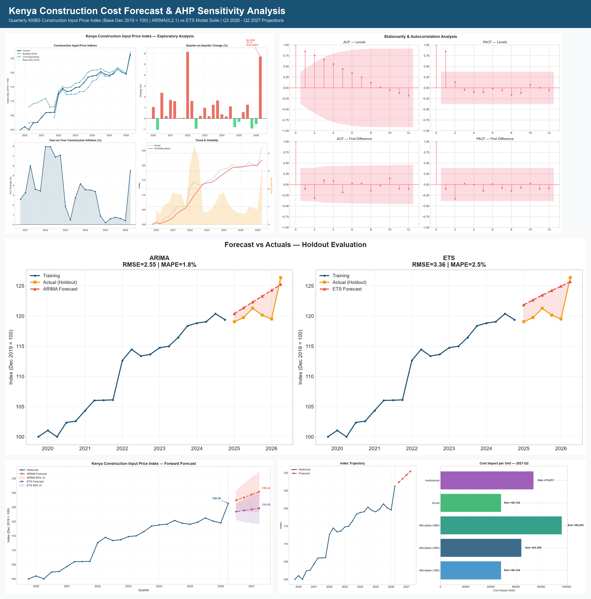
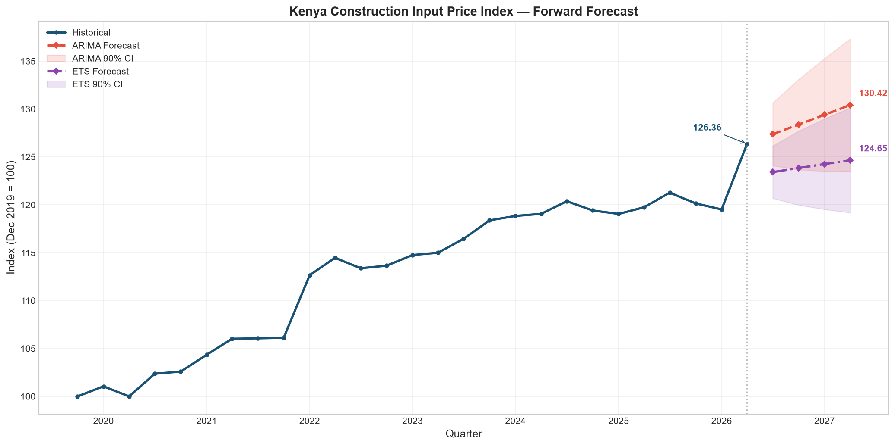
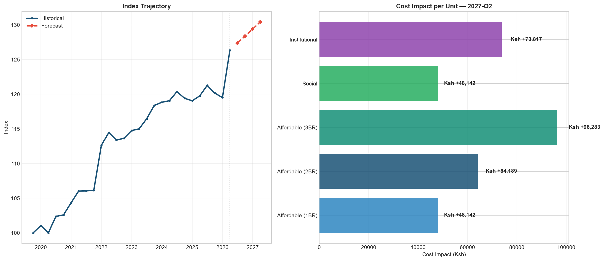
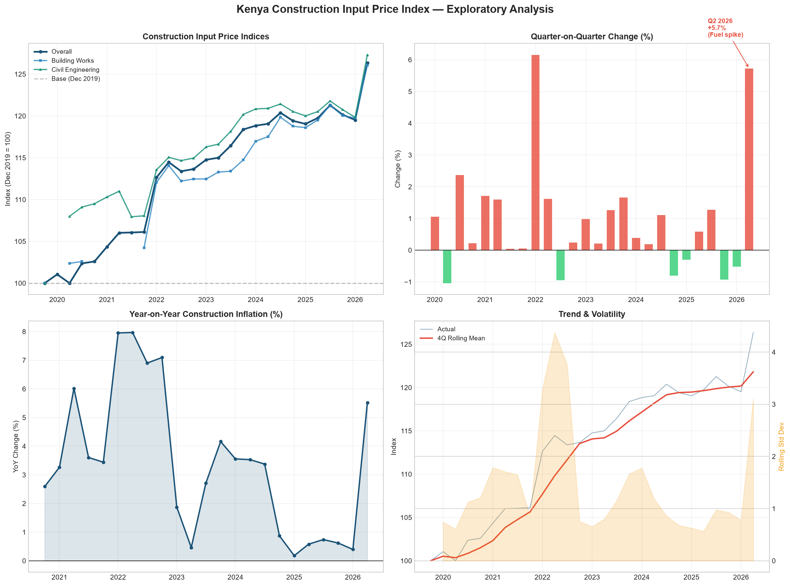
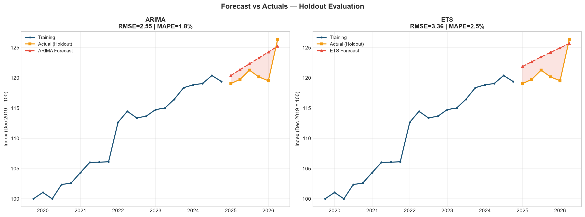
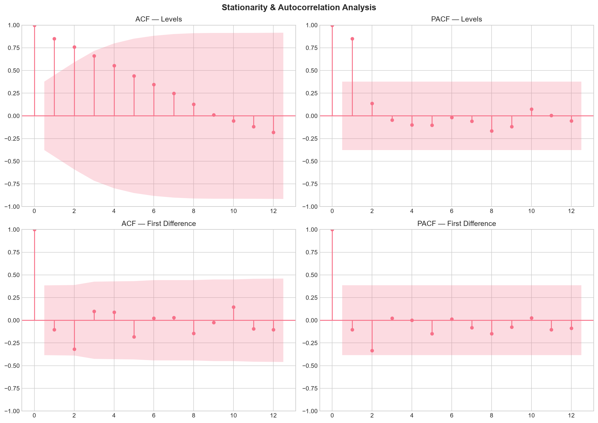

Time Series Modeling & AHP Cost Sensitivity Analysis | Source: Kenya National Bureau of Statistics (KNBS) CIPI
All 5 analysis perspectives combined into a single unified visual: Historical Trends, Stationarity & Differencing, Out-of-Sample Holdout Testing, 4-Quarter Forward Forecast with Confidence Intervals, and Unit-Level AHP Cost Sensitivity.

ARIMA(0,2,1) and Exponential Smoothing projections for the overall construction input price index following the sharp Q2 2026 fuel cost shock.

Translates projected index increases into expected unit price escalations across 1BR, 2BR, 3BR, Social, and Institutional housing types.

Historical trajectory across 27 quarters (2019-Q4 to 2026-Q2), showing Building vs. Civil Engineering divergence, quarterly percentage changes, and sub-index volatility.

Comparing ARIMA(0,2,1) and Damped Holt ETS out-of-sample predictions against actual recorded KNBS figures.

Augmented Dickey-Fuller (ADF) testing before and after differencing, alongside ACF and PACF correlograms.
